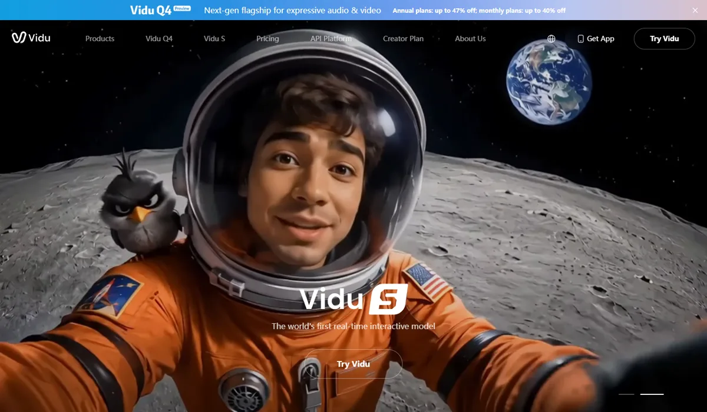

生数科技 Vidu北京生数科技 · Vidu
生数科技由清华大学朱军团队孵化，2026 年接连完成超 6 亿元 A+ 轮和阿里云领投的近 20 亿元 B 轮融资，把自己定位为“通用世界模型”公司：数字世界做 Vidu 视频，物理世界做具身智能模型 Motus。Vidu Q3 发布时公司称排名全球第二，但在当前的第三方盲测中已降到第 27，视频赛道的排名变化之快由此可见。
一页结论
- 资本密集涌入：2 月超 6 亿元 A+ 轮（视觉中国、万兴科技、拓尔思战略投资），4 月近 20 亿元 B 轮（阿里云领投）；媒体报道其考虑赴港上市S1S2S4
- 排名下滑最快：Vidu Q3（2026 年 1 月）发布时公司援引 Artificial Analysis 称“中国第一、全球第二”，当前文生视频榜已降到第 27，九个月内被十几款新模型超过S2S3
- 定位转向世界模型：数字端 Vidu、物理端 Motus（2025 年 12 月开源），7 月发布实时交互模型 Vidu S1；官网已预告 Vidu Q4S1S5S6
- 聚焦动画与短剧：Vidu Q3 主打“为剧而生”，4 月上线参考生视频，可组合角色、场景、服装、道具和风格S7S8
- 收入规模仍小：公司只给出“10 倍增长”，媒体报道年化收入约 2,000 万美元，未见经审计数据S2S9
01公司介绍
| 项目 | 内容 |
|---|---|
| 公司 | 北京生数科技，由清华大学朱军教授团队创立；产品 ViduS5 |
| 官网 | vidu.com（海外）、vidu.cn（国内） |
| 总部 | 北京 |
| 融资 | 2026 年 2 月 A+ 轮超 6 亿元（中关村科学城公司、星连资本领投）；4 月 B 轮近 20 亿元（阿里云领投，百度风投等老股东跟投）S1S2 |
| 上市计划 | 媒体援引知情人称拟赴港上市，募资超 5 亿美元，公司未确认S4 |
| 业务布局 | 数字世界：Vidu（世界生成模型）；物理世界：Motus（世界动作模型）S1 |
02公司战略
生数的主线是“视频生成是世界模型的入口”：用 Vidu 在内容生产里变现，用同一套技术积累走向实时交互和具身智能。
03定位与竞争
一句话定位：为动画、短剧、广告和文旅等内容团队，在系列化内容生产中，提供角色与场景一致性强的视频生成，并向实时交互和具身智能延伸。
| 目标用户 | 主要入口 | 依据 |
|---|---|---|
| 动画与短剧团队 | Vidu 网页与 App | Q3 主打“为剧而生”，参考生可锁定角色与场景S7S8 |
| 企业客户 | Vidu API、阿里云百炼 | 服务互联网、广告、动画影视、教育、文旅等行业S1S2 |
| 全球创作者 | vidu.com | 媒体报道覆盖 200 多个国家和地区S9 |
| 具身智能公司 | Motus 开源模型 | 与多家具身智能企业战略合作S1 |
04产品与模型矩阵
| 类别 | 模型 / 产品 | 定位 | 状态（2026-11） |
|---|---|---|---|
| 视频 | Vidu Q3 Pro / Q3 Turbo | 主力视频模型；公司称最长 16 秒声画同出 | 2026 年 1 月发布S7 |
| 视频 | Vidu Q3 参考生 | 组合角色、场景、服装、道具、风格 | 2026 年 4 月全球上线S8 |
| 视频 | Vidu Q4（预览） | 官网称“下一代旗舰” | 预览中，详情未公开S11 |
| 实时交互 | Vidu S1 | 语音实时控制、无限时长连续生成，540p、25 帧 | 7 月发布，内测中S6 |
| 具身智能 | Motus | 世界动作模型 | 2025 年 12 月开源S1 |
| 3D | — | 无 3D 生成产品 | — |
用户入口
Vidu 网页与 App（国内、海外）Vidu API 平台阿里云百炼
创作功能
文生 / 图生视频参考生（角色、场景、道具、风格）实时交互角色
模型
Vidu Q3 Pro / TurboVidu Q4（预览）Vidu S1
物理世界
Motus 世界动作模型（开源）
合规AI 生成标识（国内法规要求）

05生成能力与可控性
参考生和实时交互有特色，但主力模型的第三方排名已明显落后。
| 能力 | Vidu |
|---|---|
| 长度 | 公司称 Q3 最长 16 秒声画同出；S1 可无限时长连续生成S6S7 |
| 参考生 | 组合角色、场景、服装、道具、风格于一次生成S8 |
| 音频 | Q3 声画同出S7 |
| 实时交互 | S1 支持语音实时控制，540p、25 帧（最高 42 帧），采用自回归 + 扩散路线S6 |
| 公司自报 | 称 Q3 发布时在 Artificial Analysis 排名全球第二、生成速度比 Sora 2 快 10 倍；称参考生在 SuperCLUE 榜单第一（公司称）S2S8 |
Vidu其他厂商
Wan 3.0（阿里）
1172
MiniMax H3
1160
Seedance 2.5（字节）
1155
Kling 3.0 Omni（快手）
1022
Veo 3.1（Google）
961
Vidu Q3 Pro
938
Vidu Q3 Turbo
913
第三方评测怎么说
| 评测方 | 时间 | 对比对象 | 结论 |
|---|---|---|---|
| Artificial Analysis（用户盲选） | 2026-11-04 访问 | 文生视频全榜（含音频） | Vidu Q3 Pro 第 27，落后国内的阿里、MiniMax、字节、快手S3 |
| Artificial Analysis（公司援引） | 2026-01 至 02 | Vidu Q3 发布时 | 公司称排名中国第一、全球第二（当时的榜单版本，公司援引）S2 |
未找到署名媒体对 Vidu Q3、S1 的独立对比实测；SuperCLUE 名次只出现在公司新闻稿中。
评测共识：Vidu 的排名在九个月内从公司所称的全球第二跌到第 27，说明视频模型的领先窗口极短；参考生与实时交互的实际效果缺少独立验证。
06解决方案与场景
07商业模式与价格
会员订阅 + API；官网正在推年付最高 47%、月付最高 40% 的折扣。
| 项目 | 价格 |
|---|---|
| Vidu Q3 Pro（API） | 每分钟 7.20 美元 |
| Vidu Q3 Turbo（API） | 每分钟 3.90 美元 |
| 会员（海外站） | 年付最高 47% 折扣、月付最高 40% 折扣（促销） |
API 价格取 Artificial Analysis 列出的价格，会员折扣取 vidu.com 首页横幅，2026-11-05。官方 API 价目表未能直接读取。来源：S3S11
| 任务 | 用什么 | 估算成本 |
|---|---|---|
| 一条 8 秒视频 | Vidu Q3 Turbo / Pro | 约 $0.52 / $0.96 |
| 一分钟视频 | Vidu Q3 Turbo | 约 $3.90 |
按上表价格换算。来源：S3
08上下游与渠道
09用户、客户与收入
10用户口碑与容错设计
11版权与合规
12近期动态
13潜在风险分析意见
- 模型掉队：当前排名与第一梯队差约 230 分，Q4 若不能追上，品牌和融资叙事都会受影响
- 投资方即对手：阿里云领投，但阿里自己的 Wan 3.0 排名第一，渠道与竞争关系复杂
- 战线过长：同时做视频、实时交互和具身智能，资源分散
- 收入与估值差距：收入规模小，依赖融资和上市窗口
- 数据可信度：公司自报名次与第三方结果差距大，可能影响企业客户的信任
14综合结论分析意见
图像质量缺位未发现可比的独立图像模型
3D 生成缺位无；物理世界方向是具身智能而非 3D 资产
关键动作拆解（三问法）
| 动作 | 为什么做（推断） | 效果如何 | 要不要学 |
|---|---|---|---|
| 定位“通用世界模型” | 把视频生成的估值逻辑延伸到具身智能等更大市场 | 获阿里云领投的大额融资S1 | 观望叙事要有产品和收入跟上 |
| 主打动画与短剧 | 系列化内容对一致性要求高，正好发挥参考生优势 | 参考生上线，收入绝对值未公开S2S8 | 借鉴选一个对一致性要求高的垂直场景 |
| 做实时交互模型 | 从离线生成走向互动娱乐 | 内测中S6 | 观望 |
| 引入版权公司为战略投资方 | 为训练数据和商用版权做准备 | 合作细节未披露S2 | 借鉴版权合规可以前置到股东和合作层面 |
优势
- 清华团队与融资能力
- 参考生与系列内容
- 世界模型布局
劣势
- 第三方排名落后
- 收入规模小
- 缺少大流量入口
机会
- 动画短剧批量生产
- 实时互动内容
- 具身智能
威胁
- 国内大厂与 MiniMax 的模型迭代
- 投资方自研竞争
- 上市窗口变化
对本系列三个问题的回答
- 大厂会不会通吃？ Vidu 的经历说明，没有大入口、模型又被超越的专业公司处境最难；它的应对是转向世界模型和具身智能，并引入阿里云作为领投方
- 钱从哪里来？ 会员与 API，收入规模小（媒体称年化约 2,000 万美元），主要依赖融资
- 3D 离商用还差什么？ 生数没有 3D 资产产品，物理世界方向选择了具身智能
对 AI 产品团队的启示
高优借鉴
- 视频模型的领先窗口可能只有几个月：选型时要看最新的第三方榜单，而不是厂商发布时的说法
- 做系列化内容（动画、短剧、品牌 IP）时，优先评估参考生一类的一致性能力
观望
- 实时交互视频（Vidu S1）：内测中，适合关注而非立即采用
- Vidu Q4 能否回到第一梯队
不建议
- 直接引用厂商新闻稿里的榜单名次做决策
- 在模型竞争力不足时同时铺开过多方向
信息缺口
以下信息未找到可靠的公开来源，本报告不做推测。
- Vidu 的收入与用户绝对值（公司只给增长倍数）
- 官方 API 价目表与会员价格
- Vidu Q4 的发布时间与能力
- Vidu Q3、S1 的独立对比评测
- B+ 轮融资（单一媒体报道，未能交叉验证）
来源
A 官方 · B 权威媒体或第三方 · C 社区（仅用于口碑与线索）。访问日期均为 2026-11-05。
- S1 · B生数科技完成近 20 亿元 B 轮融资，以通用世界模型定义下一代数字与物理世界生产力底座量子位 · 2026-04-10
- S2 · B中国第一，全球第二，视频大模型领军者生数科技完成超 6 亿元 A+ 轮融资量子位（公司公告） · 2026-02-06
- S3 · BAA-Video-T2V v2.1 Text to Video LeaderboardArtificial Analysis · 2026-11-04 访问
- S4 · B生数科技据报考虑赴港 IPO，拟募资超 5 亿美元东方财富财富号 · 2026-08-19
- S5 · B生数科技完成 20 亿融资 前有巨头后有追兵如何突围？腾讯新闻 · 2026-04-18
- S6 · B生数科技发布 Vidu S1 实时交互模型，视频生成迈入“实时互动”时代同花顺财经 · 2026-07-03
- S7 · CVidu Q3 发布相关报道（“为剧而生”、16 秒声画同出）搜索结果汇总的媒体报道 · 2026-01
- S8 · AShengShu Launches Vidu Q3 Reference-to-Video with Expanded Visual and Audio Capabilities生数科技（美通社新闻稿） · 2026-04-13
- S9 · C生数科技拟港股 IPO，Vidu 商业化提速（年化收入约 2,000 万美元）ZGEO · 2026
- S10 · CShengShu Technology Launches AI-Powered Animated Series Production Tool at SXSW 2026BriefGlance · 2026-03
- S11 · AVidu 海外官网首页生数科技 · 2026-11-05 访问
- S12 · B《人工智能生成合成内容标识办法》发布，2025 年 9 月 1 日起施行新华网 · 2025-03-14